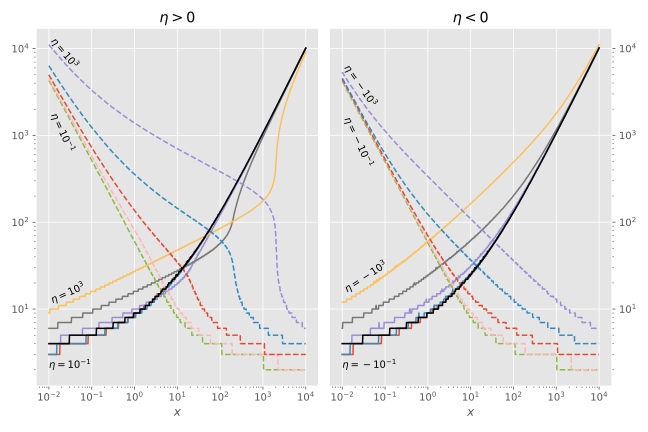

Continued Fractions
Sometimes it is difficult to know a priori how many iterations are needed for the continued fractions to converge. In the figure below, we illustrate how many iterations were needed to reach convergence for SphericalBesselFunctions.coulomb_fraction1 (solid lines) and SphericalBesselFunctions.coulomb_fraction2 (dashed lines), as a function of $x$, for a range of values of $\eta$ ($\pm10^n$, $n=-1..3$) and $\lambda=0$. Shown in black is the number of iterations required to converge SphericalBesselFunctions.bessel_fraction. This plot should be compared with figure 1 of
- Barnett, A. (1982). Continued-fraction evaluation of Coulomb functions $F_\lambda(\eta, x)$, $G_\lambda(\eta, x)$ and their derivatives. Journal of Computational Physics, 46(2), 171–188. 10.1016/0021-9991(82)90012-2

SphericalBesselFunctions.lentz_thompson — Functionlentz_thompson(b₀, a, b; max_iter=20_000)Lentz–Thompson algorithm for the forward evaluation of continued fractions:
\[f_n = b_0 + \frac{a_1}{b_1+}\frac{a_2}{b_2+}...\frac{a_{n-1}}{b_{n-1}+}\frac{a_n}{b_n}\]
As described in
- Barnett, A. R. (1996). The Calculation of Spherical Bessel and Coulomb Functions. In (Eds.), Computational Atomic Physics (pp. 181–202). Springer Berlin Heidelberg.
The number of iterations required is roughly proportional to the argument of the Bessel, according to Barnett (1996). For the Coulomb functions, the number of iterations required is a bit more involved, see
- Barnett, A. (1982). Continued-fraction evaluation of Coulomb functions $F_\lambda(\eta, x)$, $G_\lambda(\eta, x)$ and their derivatives. Journal of Computational Physics, 46(2), 171–188. 10.1016/0021-9991(82)90012-2
SphericalBesselFunctions.steed_kahan — Functionsteed_kahan(b₀, a, b)Steed's algorithm for the forward evaluation of continued fractions, with Kahan summation to avoid loss of accuracy.
\[f_n = b_0 + \frac{a_1}{b_1+}\frac{a_2}{b_2+}...\frac{a_{n-1}}{b_{n-1}+}\frac{a_n}{b_n}\]
As described in
- Thompson, I., & Barnett, A. (1986). Coulomb and Bessel functions of complex arguments and order. Journal of Computational Physics, 64(2), 490–509. 10.1016/0021-9991(86)90046-x